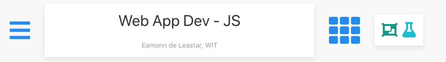
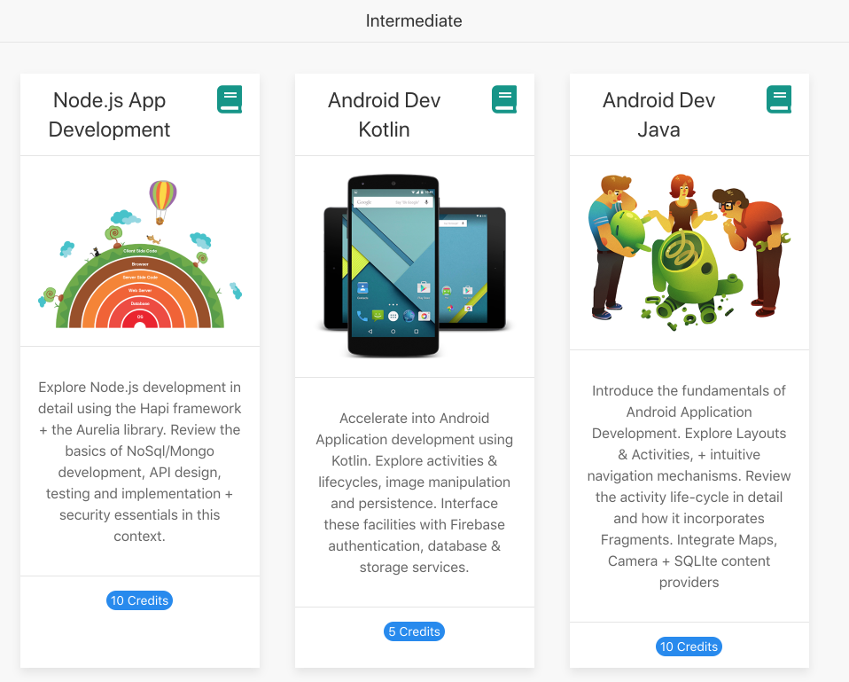

Objectives
Multiple modules can be integrated into a portfolio, which can be further organised into categories.
Portfolio Example
Visit this site here:
This is a portfolio of modules built with tutors. Each card in the above is a full module. Each module is navigable as before, except each course 'home' page has a slightly different header:

This will permit navigation back to the Portfolio 'home'.
Notice also that, in the Portfolio Home, modules are grouped and labeled:
Group 1

Group 2

Group 3

Portfolio Example
The easiest way to explore portfolios is to have tutors generate a set of starter courses, and automatically aggregate them.
Create an empty folder - called portfolio below (but can be any name) - and use tutors to create three new courses:
tutors new
tutors new
tutors newThis will generate a folder structure like this:
Each is a standalone course, and individual public-site folders can be generated by running tutors in each folder.
However, tutors can also be run in the portfolio folder itself:
tutors
tutors course web generator: 1.4.0
- tutors-starter-0
- tutors-starter-1
- tutors-starter-2
Topic 1
Talks:
....
....This will generate a public-site in as a subdirectory of portfolio:

... and this version is an aggregate of the three courses:

Each of these is an individual module, with the revised navigation as discussed before.
Portfolio Structure
Tutors will have generated a portfolio.yaml file like this:
portfolio.yaml
title: 'A collection of recent Modules in Modern Computer Science'
credits: 'Department of Computing & Mathematics, WIT'
courseGroups:
- title: 'Module Group Label'
modules:
- tutors-starter-0
- tutors-starter-1
- tutors-starter-2This can be edited as you please - to customise the title, credits and also module groups.
Try the following as an exercise - generate 2 more starter modules:
tutors new
tutors newYou should have 5 starter courses now:
- tutors-starter-0
- tutors-starter-1
- tutors-starter-2
- tutors-starter-3
- tutors-starter-4
Regenerate, and inspect the portfolio home:
Looking at portfolio.yaml - it will have been revised:
title: 'A collection of recent Modules in Modern Computer Science'
credits: 'Department of Computing & Mathematics, WIT'
courseGroups:
- title: 'Module Group Label'
modules:
- tutors-starter-0
- tutors-starter-1
- tutors-starter-2
- tutors-starter-3
- tutors-starter-4We can restructure this to express different subgroups (next step).
Module Grouping
This is the current portfolio.yaml:
title: 'A collection of recent Modules in Modern Computer Science'
credits: 'Department of Computing & Mathematics, WIT'
courseGroups:
- title: 'Module Group Label'
modules:
- tutors-starter-0
- tutors-starter-1
- tutors-starter-2
- tutors-starter-3
- tutors-starter-4Change it to this:
title: 'A collection of recent Modules in Modern Computer Science'
credits: 'Department of Computing & Mathematics, WIT'
courseGroups:
- title: 'Alpha Group'
modules:
- tutors-starter-0
- tutors-starter-1
- tutors-starter-2
- title: 'Beta Group'
modules:
- tutors-starter-3
- tutors-starter-4Regenerate the portfolio again. This time the portfolio home should look like this:
The yaml file is sensitive to column positions, so make sure you indent (with spaces) as shown in the above examples.
The image + summary + credits for each module in the portfolio home page are read from each individual module files:
- course.jpg (can also be .png)
- course.md
- credits
Also note, the generated site is completely separate from the individual public-site as generated in each module.
Exercises
Exercise 1: Extend Portfolio
Incorporate the module you generated in the earlier labs into the example portfolio you have just created. The following steps should suffice to do this:
- Copy/move the module into the portfolio folder (perhaps rename first to something unique)
- Edit `portfolo.yaml' to include the module in one of the subgroups we created in the last step
- Regenerate the portfolio and verify that it now includes the new module
Exercise 2: Publish Portfolio
Try to publish the portfolio to a new github gh-pages site. Remember, you will be publishing the portfolio/public-site folder (not '/portfolio').
Exercise 3: Standalone Site
Download this course - then one you are doing now - via this command:
git clone https://github.com/wit-tutors/tutors-course-src.gitBuild the course via the tutors command. Verify that it has build correctly (by browsing it locally). Incorporate the course into the portfolio you created in the earlier exercises.
Try building the course using this command:
tutors -sCan you see a different output? A version of the course web - generated to standalond-site - can be browsed using a machine not connected to Internet. All assets are replicated in the public-site folder and linked to from there. The other generated versions rely on CDNs to download public assets (style sheets + js modules).
Exercise 4: mbignore
For the course download in Exercise 3 above, open the file mbignore and paste in the following:
mbignore
topic05-gitRebuild the course. The newly generated course will exclude any topics listed in mbignore. Try it again, excluding more topics:
topic04-portfolios
topic05-gitOnly the first 3 topics should now be published.
Leaving the above mbignore in place, run tutors again with this flag:
tutors -pThis will generate public-site as before, excluding the named topics. However, simultaneously it will generate a new private-site folder. This version will include all topics, regardless of the contents of mbignore.
This last scenario can be useful for selectively publishing a course for public consumption, but privately working on later, unpublished, topics.
Exercise 5: credits
For the course downloaded in Exercise 3, investigate the contents of the credits file:
Eamonn de Leastar (edeleastar@wit.ie)However, there is another credits file in topic05-git/book-b-branching-and-merging
credits
Jason Madigan (jmadigan@redhat.com) & Gerard Ryan (gryan@redhat.com)This version of the credits is local to that particular lab.
Try giving yourself the credit for one of the labs, or topics - and see how it is rendered when the course is generated.